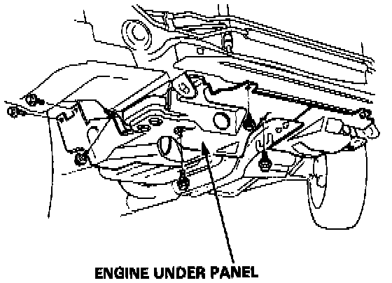
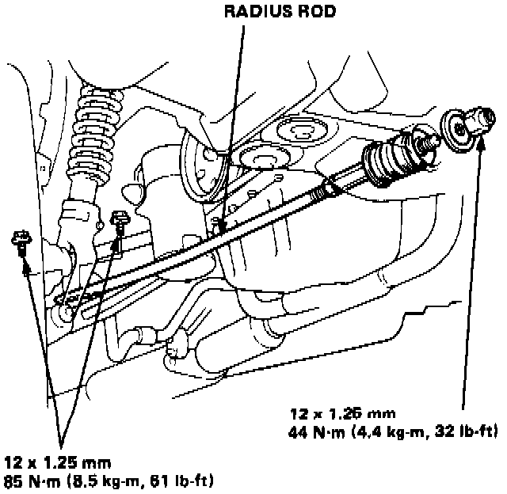
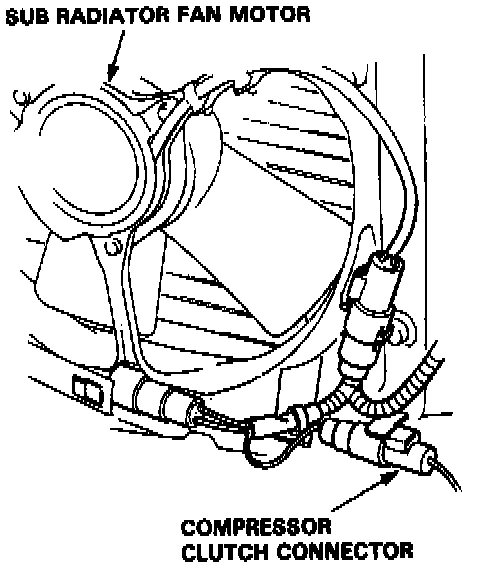
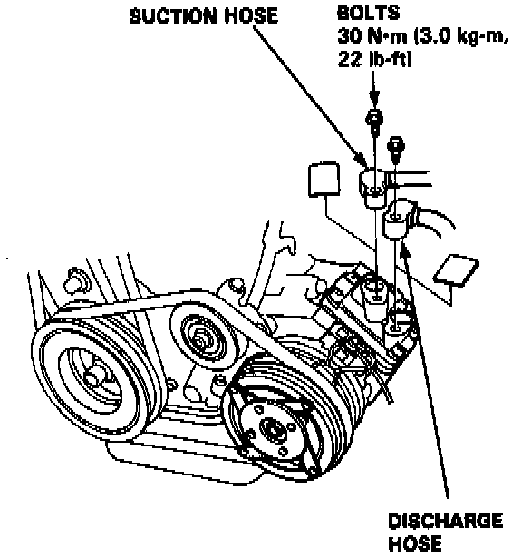
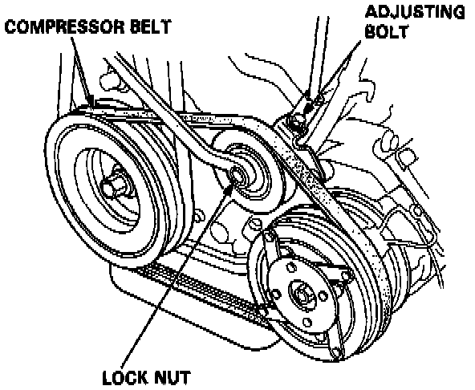
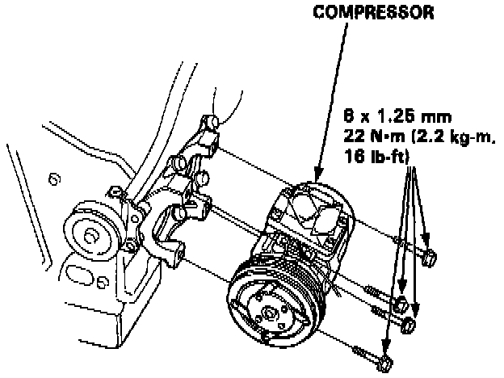
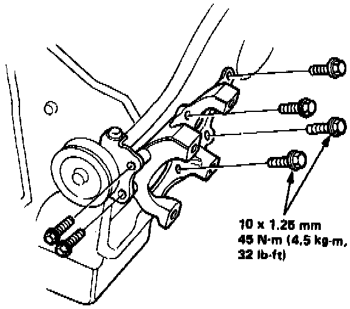
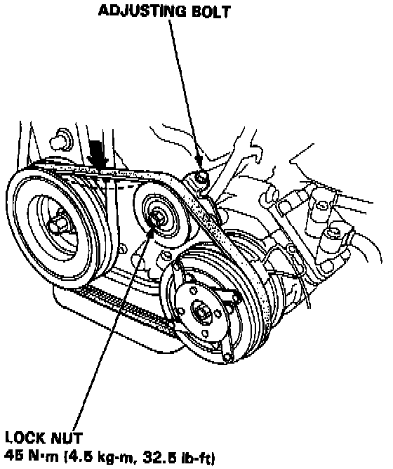

Compressor HVAC: Service and Repair
COMPRESSOR REPLACEMENT1. If the compressor is marginally operable, run the engine at idle speed and turn on the air conditioner fan a few minutes, then shut the engine off and disconnect the battery negative terminal.
2. Raise the car on a hoist, remove the front grille, spoiler, bumper and right wheel.

3. Remove tapping screws, then remove the engine under panel.

4. Remove the right radius rod.

5. Disconnect the compressor clutch connector.
6. Recover the refrigerant from the system.

7. Disconnect the suction and discharge hoses from the compressor.
CAUTION: Cap the open fittings immediately to keep moisture and dirt out of the system.

8. Loosen the lock nut, then loosen the compressor adjusting bolt and remove the compressor belt.

9. Remove the compressor mounting bolts (4) and compressor. Rest the compressor on the front beam.

10. Remove the mount bolts (6) and compressor bracket if necessary.
Install the compressor in the reverse order of removal and:
- If a new compressor is installed, drain 30 cc (1 fl oz) of refrigerant oil through the suction fitting on the compressor.

- Adjust the belt.
BELT TENSION: 9 - 11 mm (9/32 - 11/32 in)
deflection when 98N (10 kg, 22 lb) force is applied between the pulleys.
- Charge the system.
- Test the performance.